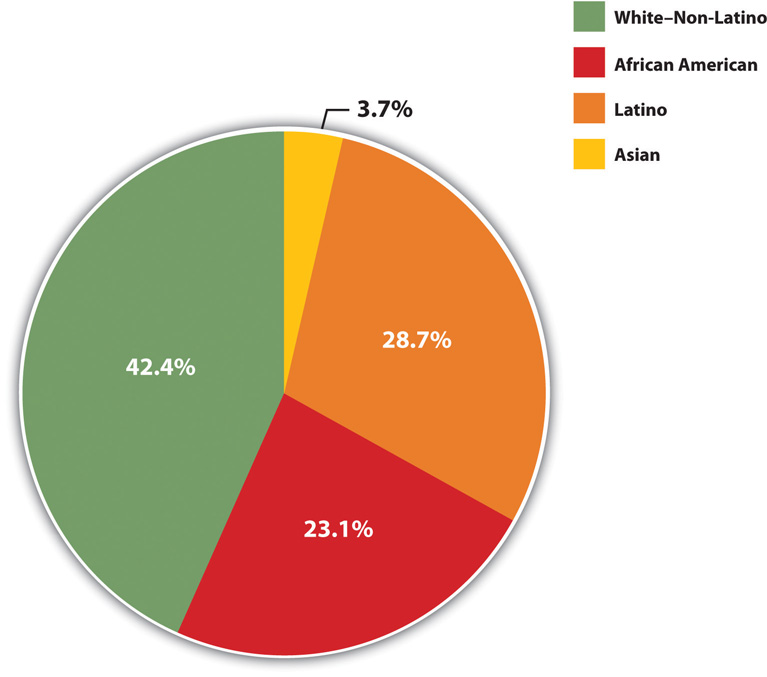
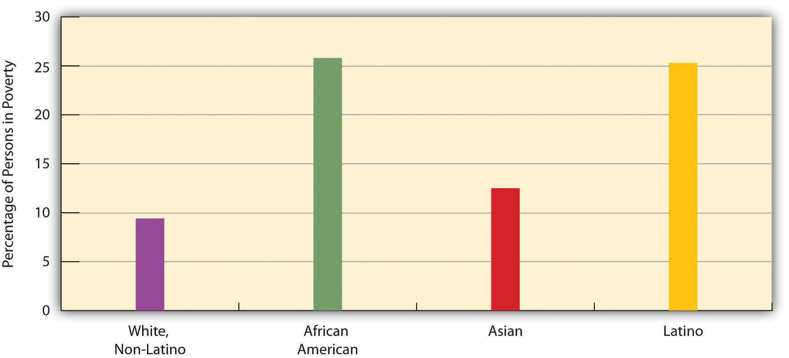
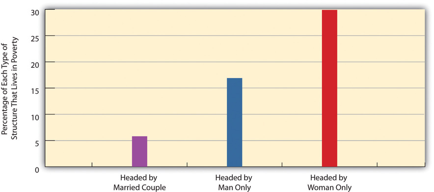

Who are the poor? Although the official poverty rate in 2010 was 15.1 percent, this rate differs by the important sociodemographic characteristics of race/ethnicity, gender, and age, and it also differs by region of the nation and by family structure. The poverty rate differences based on these variables are critical to understanding the nature and social patterning of poverty in the United States. We look at each of these variables in turn with 2010 census data (DeNavas-Walt et al., 2011).DeNavas-Walt, C., Proctor, B. D., & Smith, J. C. (2011). Income, poverty, and health insurance coverage in the United States: 2010 (Current Population Reports, P60-298). Washington, DC: US Census Bureau.
Here is a quick quiz; please circle the correct answer.
Most poor people in the United States are
What did you circle? If you are like the majority of people who answer a similar question in public opinion surveys, you would have circled a. Black/African American. When Americans think about poor people, they tend to picture African Americans (White, 2007).White, J. A. (2007). The hollow and the ghetto: Space, race, and the politics of poverty. Politics & Gender, 3, 271–280. This popular image is thought to reduce the public’s sympathy for poor people and to lead them to oppose increased government aid for the poor. The public’s views on these matters are, in turn, thought to play a key role in government poverty policy. It is thus essential for the public to have an accurate understanding of the racial/ethnic patterning of poverty.
The most typical poor people in the United States are non-Latino whites. These individuals comprise 42.4 percent of all poor Americans.
Image courtesy of Yunchung Lee, http://www.flickr.com/photos/bleuman/5677830843/.
Unfortunately, the public’s racial image of poor people is mistaken, as census data reveal that the most typical poor person is white (non-Latino). To be more precise, 42.4 percent of poor people are white (non-Latino), 28.7 percent are Latino, 23.1 percent are black, and 3.7 percent are Asian (see Figure 2.2 "Racial and Ethnic Composition of the Poor, 2010 (Percentage of Poor Persons Who Belong to Each Group)"). As these figures show, non-Latino whites certainly comprise the greatest number of the American poor. Turning these percentages into numbers, they account for 19.6 million of the 46.2 million poor Americans.
It is also true, though, that race and ethnicity affect the chances of being poor. While only 9.9 percent of non-Latino whites are poor, 27.4 percent of African Americans, 12.1 percent of Asians, and 26.6 percent of Latinos (who may be of any race) are poor (see Figure 2.3 "Race, Ethnicity, and Poverty, 2010 (Percentage of Each Group That Is Poor)"). Thus African Americans and Latinos are almost three times as likely as non-Latino whites to be poor. (Because there are so many non-Latino whites in the United States, the greatest number of poor people are non-Latino white, even if the percentage of whites who are poor is relatively low.) The higher poverty rates of people of color are so striking and important that they have been termed the “colors of poverty” (Lin & Harris, 2008).Lin, A. C., & Harris, D. R. (Eds.). (2008). The colors of poverty: Why racial and ethnic disparities persist. New York, NY: Russell Sage Foundation.
Figure 2.2 Racial and Ethnic Composition of the Poor, 2010 (Percentage of Poor Persons Who Belong to Each Group)
Source: Data from DeNavas-Walt, C., Proctor, B. D., & Smith, J. C. (2011). Income, poverty, and health insurance coverage in the United States: 2010 (Current Population Report P60-239). Washington, DC: US Census Bureau.
Figure 2.3 Race, Ethnicity, and Poverty, 2010 (Percentage of Each Group That Is Poor)
Source: Data from DeNavas-Walt, C., Proctor, B. D., & Smith, J. C. (2011). Income, poverty, and health insurance coverage in the United States: 2010 (Current Population Report P60-239). Washington, DC: US Census Bureau.
One thing that many women know all too well is that women are more likely than men to be poor. According to the census, 16.2 percent of all females live in poverty, compared to only 14.0 percent of all males. These figures translate to a large gender gap in the actual number of poor people, as 25.2 million women and girls live in poverty, compared to only 21.0 million men and boys, for a difference of 4.2 million people. The high rate of female poverty is called the feminization of poverty (Iceland, 2006).Iceland, J. (2006). Poverty in America: A handbook. Berkeley, CA: University of California Press. We will see additional evidence of this pattern when we look at the section on family structure that follows.
Turning to age, at any one time 22 percent of children under age 18 are poor (amounting to 16.4 million children), a figure that rises to about 39 percent of African American children and 35 percent of Latino children. About 37 percent of all children live in poverty for at least one year before turning 18 (Ratcliffe & McKernan, 2010).Ratcliffe, C., & McKernan, S.-M. (2010). Childhood poverty persistence: Facts and consequences. Washington, DC: Urban Institute Press. The poverty rate for US children is the highest of all wealthy democracies and in fact is 1.5 to 9 times greater than the corresponding rates in Canada and Western Europe (Mishel, Bernstein, & Shierholz, 2009).Mishel, L., Bernstein, J., & Shierholz, H. (2009). The state of working America 2008/2009. Ithaca, NY: ILR Press. As high as the US childhood poverty rate is, twice-poverty data again paint an even more discouraging picture. Children living in families with incomes below twice the official poverty level are called low-income children, and their families are called low-income families. Almost 44 percent of American children, or some 32.5 million kids, live in such families (Addy & Wright, 2012).Addy, S., & Wright, V. R. (2012). Basic facts about low-income children, 2010. New York, NY: National Center for Children in Poverty. Almost two-thirds of African American children and Latino children live in low-income families.
At the other end of the age distribution, 9 percent of people aged 65 or older are poor (amounting to about 3.5 million seniors). Turning around these age figures, almost 36 percent of all poor people in the United States are children, and almost 8 percent of the poor are 65 or older. Thus more than 43.4 percent of Americans living in poverty are children or the elderly.
Poverty rates differ around the country. Some states have higher poverty rates than other states, and some counties within a state are poorer than other counties within that state. A basic way of understanding geographical differences in poverty is to examine the poverty rates of the four major regions of the nation. When we do this, the South is the poorest region, with a poverty rate of 16.9 percent. The West is next (15.3 percent), followed by the Midwest (13.9 percent) and then the Northeast (12.8 percent). The South’s high poverty rate is thought to be an important reason for the high rate of illnesses and other health problems it experiences compared to the other regions (Ramshaw, 2011).Ramshaw, E. (2011, July 10). Major health problems linked to poverty. New York Times, p. A21.
There are many types of family structures, including a married couple living with their children; an unmarried couple living with one or more children; a household with children headed by only one parent, usually a woman; a household with two adults and no children; and a household with only one adult living alone. Across the nation, poverty rates differ from one type of family structure to another.
Not surprisingly, poverty rates are higher in families with one adult than in those with two adults (because they often are bringing in two incomes), and, in one-adult families, they are higher in families headed by a woman than in those headed by a man (because women generally have lower incomes than men). Of all families headed by just a woman, 31.6 percent live in poverty, compared to only 15.8 percent of families headed by just a man. In contrast, only 6.2 percent of families headed by a married couple live in poverty (see Figure 2.4 "Family Structure and Poverty Rate (Percentage of Each Type of Structure That Lives in Poverty)"). The figure for female-headed families provides additional evidence for the feminization of poverty concept introduced earlier.
Figure 2.4 Family Structure and Poverty Rate (Percentage of Each Type of Structure That Lives in Poverty)
Source: Data from DeNavas-Walt, C., Proctor, B. D., & Smith, J. C. (2011). Income, poverty, and health insurance coverage in the United States: 2010 (Current Population Report P60-239). Washington, DC: US Census Bureau.
We saw earlier that 22 percent of American children are poor. This figure varies according to the type of family structure in which the children live. Whereas only 11.6 percent of children residing with married parents live in poverty, 46.9 percent of those living with only their mother live in poverty. This latter figure rises to 53.3 percent for African American children and 57.0 percent for Latino children (US Census Bureau, 2012).US Census Bureau . (2012). Poverty. Washington, DC: Author. Retrieved from http://www.census.gov/hhes/www/cpstables/032011/pov/new02_100.htm. Yet regardless of their race or ethnicity, children living just with their mothers are at particularly great risk of living in poverty.
As this chapter discusses later, many Americans think the poor are lazy and lack the motivation to work and, as is often said, “really could work if they wanted to.” However, government data on the poor show that most poor people are, in fact, either working, unemployed but looking for work, or unable to work because of their age or health. Table 2.1 "Poverty and Labor Force Participation, 2010" shows the relevant data. We discuss these numbers in some detail because of their importance, so please follow along carefully.
Table 2.1 Poverty and Labor Force Participation, 2010
| Total number of poor people | 46,180,000 |
| Number of poor people under age 18 | 16,401,000 |
| Number of poor people ages 65 and older | 3,521,000 |
| Number of poor people ages 18–64 | 26,258,000 |
| Number of poor people ages 18–64 who were: | |
| Working full- or part-time | 9,053,000 |
| Unemployed but looking for work | 3,616,000 |
| Disabled | 4,247,000 |
| In the armed forces | 77,000 |
| Able-bodied but not in the labor force | 9,254,000 |
Source: Data from US Census Bureau. (2010). Current population survey (CPS) table creator. Retrieved from http://www.census.gov/cps/data/cpstablecreator.html.
Let’s examine this table to see the story it tells. Of the roughly 46.2 million poor people, almost 20 million were either under age 18 or at least 65. Because of their ages, we would not expect them to be working. Of the remaining 26.3 million poor adults ages 18–64, almost 17 million, or about two-thirds, fell into one of these categories: (a) they worked full-time or part-time, (b) they were unemployed but looking for work during a year of very high unemployment due to the nation’s faltering economy, (c) they did not work because of a disability, or (d) they were in the armed forces. Subtracting all these adults leaves about 9.3 million able-bodied people ages 18–64.
Doing some arithmetic, we thus see that almost 37 million of the 46.2 million poor people we started with, or 80 percent, with were either working or unemployed but looking for work, too young or too old to work, disabled, or in the armed forces. It would thus be inaccurate to describe the vast majority of the poor as lazy and lacking the motivation to work.
What about the 9.3 million able-bodied poor people who are ages 18–64 but not in the labor force, who compose only 20 percent of the poor to begin with? Most of them were either taking care of small children or elderly parents or other relatives, retired for health reasons, or in school (US Census Bureau, 2012);US Census Bureau. (2012). Current population survey. 2012 annual social and economic supplement. Washington, DC: Author. some also left the labor force out of frustration and did not look for work (and thus were not counted officially as unemployed). Taking all these numbers and categories into account, it turns out that the percentage of poor people who “really could work if they wanted to” is rather miniscule, and the common belief that they “really could work if they wanted to” is nothing more than a myth.
Feeding “Motel Kids” Near Disneyland
Just blocks from Disneyland in Anaheim, California, more than 1,000 families live in cheap motels frequently used by drug dealers and prostitutes. Because they cannot afford the deposit for an apartment, the motels are their only alternative to homelessness. As Bruno Serato, a local Italian restaurant owner, observed, “Some people are stuck, they have no money. They need to live in that room. They’ve lost everything they have. They have no other choice. No choice.”
Serato learned about these families back in 2005, when he saw a boy at the local Boys & Girls Club eating a bag of potato chips as his only food for dinner. He was told that the boy lived with his family in a motel and that the Boys & Girls Club had a “motel kids” program that drove children in vans after school to their motels. Although the children got free breakfast and lunch at school, they often went hungry at night. Serato soon began serving pasta dinners to some seventy children at the club every evening, a number that had grown by spring 2011 to almost three hundred children nightly. Serato also pays to have the children transported to the club for their dinners, and he estimates that the food and transportation cost him about $2,000 monthly. His program had served more than 300,000 pasta dinners to motel kids by 2011.
Two of the children who eat Serato’s pasta are Carlos and Anthony Gomez, 12, who live in a motel room with the other members of their family. Their father was grateful for the pasta: “I no longer worry as much, about them [coming home] and there being no food. I know that they eat over there at [the] Boys & Girls Club.”
Bruno Serato is merely happy to be helping out. “They’re customers,” he explains. “My favorite customers” (Toner, 2011).Toner, K. (2011, March 24). Making sure “motel kids” don’t go hungry. CNN. Retrieved from http://www.cnn.com/2011/LIVING/03/24/cnnheroes.serato.motel.kids/index.html.
For more information about Bruno Serato’s efforts, visit his charity site at www.thecaterinasclub.org.